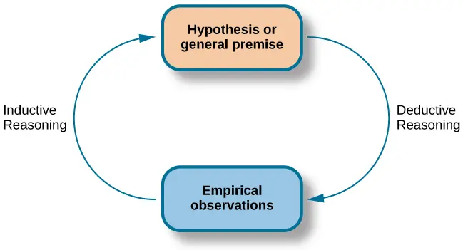
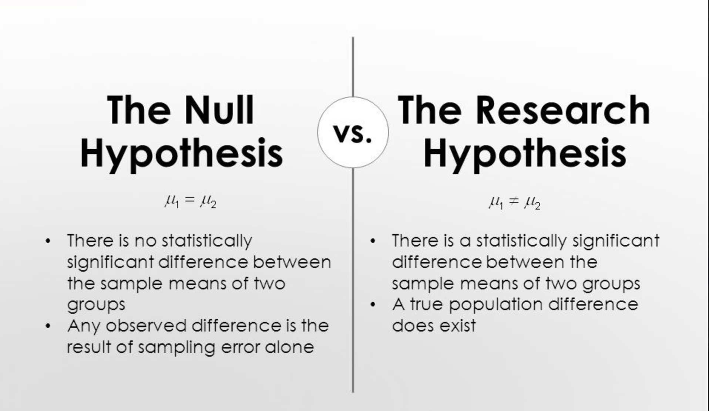

# Load the tidyverse package [5, 6]
library(tidyverse)Week 3 - Data Visualisation & Scientific Hypotheses
RMDA ARES40011

Preparation
Learning objectives
| Research Methods | Data Analyses |
|---|---|
| Distinguish between scientific and statistical hypotheses | Produce informative summaries of data |
| Elaborate sounding scientific hypotheses | Understand moments of distribution |
| Basics of data visualization |
Readings
For Data Analyses
- Check chapter 4 of the e-book Tidyverse Skills for Data Science
- Data visualization with ggplot2 :: Cheat Sheet
- Data summaries with dplyr
For Research Methods
Lesson
Part 1
What is a scientific hypothesis?
According to the Britannica, a scientific hypothesis is: “… an idea that proposes a tentative explanation about a phenomenon or a narrow set of phenomena observed in the natural world.”

Deductive reasoning and inductive reasoning are two inseparable but distinct processes within scientific research. They reasonate with each other in a cyclical manner to advance scientific knowledge.
Here’s how they connect:
Inductive reasoning often initiates the scientific process. It begins with empirical observations of the real world. By noticing patterns in these observations, scientists use inductive reasoning to construct broad generalisations or theories. For example, observing that apples, bananas, and oranges grow on trees might lead to the inductive generalisation that all fruit grows on trees.
Once a theory is formulated through inductive reasoning, it then serves as a basis for deductive reasoning. Deductive reasoning starts with a generalisation or hypothesis (derived from the theory) and uses it to reach logical conclusions about the real world. If the hypothesis is correct, then the logical conclusions reached through deductive reasoning should also be correct.
For instance, if the theory is that all living things require energy to survive, then deductive reasoning would lead to the conclusion that ducks, being living things, require energy to survive.
Scientists use deductive reasoning to empirically test the hypotheses that are generated from their inductively developed theories. They design studies and experiments to see if their logical conclusions hold true in the real world.
The results of these deductive tests then feed back into the scientific process. If the results are consistent with the theory (and thus the hypothesis), the theory is supported. However, if the results are not consistent, the theory may need to be modified and refined, leading to the generation of new hypotheses that will again be tested deductively. This creates a circular process where observations lead to theories (induction), theories lead to testable predictions (hypotheses), and those predictions are tested against further observations (deduction), which in turn can refine the theories. In essence, induction is often about building up from specific observations to broader ideas, while deduction is about breaking down broader ideas into specific, testable predictions. They work together, with inductive reasoning often paving the way for deductive testing, and the outcomes of deductive testing influencing the further development of theories arrived at through induction. Some research approaches, like case studies, lean more heavily on inductive processes, while experimental research often emphasises deductive reasoning.
Tip
Scientists use inductive reasoning to formulate theories, which then lead to hypotheses that are tested using deductive reasoning. In essence, science involves both inductive and deductive processes. Research approaches like case studies, which heavily rely on empirical observations and gathering large amounts of data to find interesting patterns and new ideas, are closely associated with inductive processes.
Research vs Statistical Hypotheses

A scientific hypothesis is a proposed explanation for an observation, phenomenon, or scientific problem. It must be based on observations and make a testable and reproducible prediction about reality. A scientific hypothesis is a provisional idea whose merit requires evaluation and requires further work to either confirm or disprove it. If repeatedly demonstrated to be true by experiment, a scientific hypothesis may become part of a scientific theory. In its essence, a scientific hypothesis aims to be true, adequate, accurate or useful in explaining some natural phenomenon. It guides the types of data we collect and the analyses we conduct.
A statistical hypothesis, on the other hand, is specifically used when investigating a possible correlation or similar relation between phenomena. In such cases, the hypothesis that a relation exists is not examined in the same way as a proposed new law of nature. Instead, statistical tests are employed to determine how likely it is that the observed overall effect would occur if the hypothesised relation does not actually exist.
Some key distinctions are:
Scope and Generality: A scientific hypothesis is often a broader proposed explanation, while a statistical hypothesis is a more specific statement about the relationship between variables that is subjected to statistical testing. For instance, a scientific hypothesis might be that “sunlight is necessary for seeds to grow”. A related statistical hypothesis could be that “seeds grown in bags wrapped in aluminium foil will produce shorter plants on average compared to seeds grown in bags not wrapped in foil”.
Method of Evaluation: Scientific hypotheses are evaluated through the broader scientific process, which involves observation, experimentation, and analysis. This can include various research approaches. Statistical hypotheses are specifically evaluated using statistical tests. These tests involve comparing a null hypothesis (typically stating no relation) with an alternative hypothesis (stating a relation exists) and determining the likelihood of the observed data under the null hypothesis. A decision is then made based on a pre-determined significance level.
Level of Abstraction: Scientific hypotheses often deal with underlying mechanisms or causes of phenomena. Statistical hypotheses are more directly concerned with patterns and relationships within data. The PMC source discusses the TASI model, where statistical assumptions are considered necessary to test an empirical hypothesis which is derived from a theoretical hypothesis using auxiliary assumptions. This highlights that statistical hypotheses are often a step in testing broader scientific ideas.
Form of Statement: While scientific hypotheses can be verbal or formal (e.g., mathematical models), statistical hypotheses are often formulated in terms of population parameters and distributions, making them amenable to statistical analysis.
Note
In summary, a scientific hypothesis proposes an explanation for a phenomenon and guides the research process, while a statistical hypothesis is a specific, testable statement about data relationships derived from a scientific hypothesis, which is evaluated using statistical methods. The statistical hypothesis provides a way to quantitatively assess some aspect of the broader scientific hypothesis.
Part 2
Data summarisation with dplyr
Data summarisation is a crucial step in understanding your data. It involves calculating descriptive statistics and creating summary tables to get an overview of the dataset, identify patterns, and spot potential issues. The dplyr package within the tidyverse provides a set of intuitive functions for efficient data manipulation, including powerful tools for summarisation. The tidyverse expands the vocabulary of R.
To begin, we first need to load the tidyverse package, which includes dplyr:
Summary Statistics for Ungrouped Data
The summarise() function in dplyr is used to compute summary statistics for your data1 …. When applied to an ungrouped data frame, it calculates the specified summaries across all rows1 .
Let’s use the built-in iris dataset as an example :
# Convert the iris dataset to a tibble
my_data <- as_tibble(iris)
my_data# A tibble: 150 × 5
Sepal.Length Sepal.Width Petal.Length Petal.Width Species
<dbl> <dbl> <dbl> <dbl> <fct>
1 5.1 3.5 1.4 0.2 setosa
2 4.9 3 1.4 0.2 setosa
3 4.7 3.2 1.3 0.2 setosa
4 4.6 3.1 1.5 0.2 setosa
5 5 3.6 1.4 0.2 setosa
6 5.4 3.9 1.7 0.4 setosa
7 4.6 3.4 1.4 0.3 setosa
8 5 3.4 1.5 0.2 setosa
9 4.4 2.9 1.4 0.2 setosa
10 4.9 3.1 1.5 0.1 setosa
# ℹ 140 more rowsWe can compute the mean of Sepal.Length and Petal.Length, as well as the total number of observations using summarise() and the n() function1:
# Calculate summary statistics for the entire dataset
my_data %>%
summarise(
count = n(), # Count the number of rows [7, 8]
mean_sep_length = mean(Sepal.Length, na.rm = TRUE), # Calculate the mean of Sepal.Length, removing NA values [6]
mean_pet_length = mean(Petal.Length, na.rm = TRUE) # Calculate the mean of Petal.Length, removing NA values [6]
)# A tibble: 1 × 3
count mean_sep_length mean_pet_length
<int> <dbl> <dbl>
1 150 5.84 3.76The na.rm = TRUE argument is used to handle missing values by removing them before computing the mean5 . R is clear about trying to do calculations when there is an NA5 . If there is an NA, it cannot create a correct calculation, so it will return NA again5 . This is a nice way of quickly seeing that you have missing values in your data5 ## Summary Statistics for Grouped Data
Often, we want to compute summary statistics for different groups within our data. This is This is achieved by using the group_by() function before summarise() group_by() takes one or more column names as arguments and groups the data based on the unique values in those columns. Subsequent summarise() operations will then be performed within each group.
Let’s group the iris data by Species and calculate the same summary statistics as before:
# Group the data by Species and then summarise [1, 9]
my_data %>%
group_by(Species) %>%
summarise(
count = n(), # Count the number of rows in each group [7, 8]
mean_sep_length = mean(Sepal.Length), # Calculate the mean of Sepal.Length for each species [1]
mean_pet_length = mean(Petal.Length) # Calculate the mean of Petal.Length for each species [1]
)# A tibble: 3 × 4
Species count mean_sep_length mean_pet_length
<fct> <int> <dbl> <dbl>
1 setosa 50 5.01 1.46
2 versicolor 50 5.94 4.26
3 virginica 50 6.59 5.55We can also group by multiple variables: Let’s use the ToothGrowth dataset:
# Display the head of the ToothGrowth dataset
head(ToothGrowth) len supp dose
1 4.2 VC 0.5
2 11.5 VC 0.5
3 7.3 VC 0.5
4 5.8 VC 0.5
5 6.4 VC 0.5
6 10.0 VC 0.5Now, let’s group by supp and dose and calculate the number of observations, mean, and standard deviation of len:
# Group by two variables and calculate summaries [1]
ToothGrowth %>%
group_by(supp, dose) %>%
summarise(
n = n(), # Count observations in each group [7]
mean_length = mean(len), # Calculate the mean of len [10]
sd_length = sd(len) # Calculate the standard deviation of len [10]
)`summarise()` has grouped output by 'supp'. You can override using the
`.groups` argument.# A tibble: 6 × 5
# Groups: supp [2]
supp dose n mean_length sd_length
<fct> <dbl> <int> <dbl> <dbl>
1 OJ 0.5 10 13.2 4.46
2 OJ 1 10 22.7 3.91
3 OJ 2 10 26.1 2.66
4 VC 0.5 10 7.98 2.75
5 VC 1 10 16.8 2.52
6 VC 2 10 26.1 4.80Summarising Multiple Variables
dplyr provides several functions to summarise multiple variables efficiently:
• summarise_all(): Applies a summary function to every column in the data frame.
• summarise_at(): Applies summary functions to specific columns selected using a character vector.
• summarise_if(): Applies summary functions to columns selected with a predicate function that returns TRUE. For example, we can summarise only numeric columns:
The simplified formats for these functions are:
• summarise_all(.tbl, .funs, ...)
• summarise_if(.tbl, .predicate, .funs, ...)
• summarise_at(.tbl, .vars, .funs, ...)
Where .funs can be a function name or a list of function calls, and … allows for additional arguments to the functions (e.g., na.rm = TRUE).
Useful Statistical Summary Functions
dplyr works well with various R functions that compute statistical summaries:
• Measures of centrality: mean(),median();
• Measures of variation: sd() (standard deviation), IQR() (interquartile range) , range()(range of the data);
• Measures of rank: min() (minimum value), max() (maximum value), quantile();
• Counts: n() (the number of elements), sum(!is.na(x)) (count non-missing values), n_distinct() (count the number of unique values).
• Counts and proportions of logical values: sum(x > 10) (count the number of elements where x > 10), mean(y == 0) (proportion of elements where y = 0).
Frequency Tables
For quickly obtaining frequency tables, dplyr provides the count() and tally() functions, which are synonymous.
Using the penguins dataset:
# Load the penguins dataset [6]
library(palmerpenguins)
penguins <- as_tibble(palmerpenguins::penguins)
penguins# A tibble: 344 × 8
species island bill_length_mm bill_depth_mm flipper_length_mm body_mass_g
<fct> <fct> <dbl> <dbl> <int> <int>
1 Adelie Torgersen 39.1 18.7 181 3750
2 Adelie Torgersen 39.5 17.4 186 3800
3 Adelie Torgersen 40.3 18 195 3250
4 Adelie Torgersen NA NA NA NA
5 Adelie Torgersen 36.7 19.3 193 3450
6 Adelie Torgersen 39.3 20.6 190 3650
7 Adelie Torgersen 38.9 17.8 181 3625
8 Adelie Torgersen 39.2 19.6 195 4675
9 Adelie Torgersen 34.1 18.1 193 3475
10 Adelie Torgersen 42 20.2 190 4250
# ℹ 334 more rows
# ℹ 2 more variables: sex <fct>, year <int>We can get a frequency table of the species column:
# Get a frequency table using tally
penguins %>%
group_by(species) %>%
tally()# A tibble: 3 × 2
species n
<fct> <int>
1 Adelie 152
2 Chinstrap 68
3 Gentoo 124Or equivalently:
# Get a frequency table using count
penguins %>%
count(species)# A tibble: 3 × 2
species n
<fct> <int>
1 Adelie 152
2 Chinstrap 68
3 Gentoo 124We can also group by multiple columns to get more detailed frequency tables:
# Get a frequency table with multiple grouping variables
penguins %>%
count(species, island)# A tibble: 5 × 3
species island n
<fct> <fct> <int>
1 Adelie Biscoe 44
2 Adelie Dream 56
3 Adelie Torgersen 52
4 Chinstrap Dream 68
5 Gentoo Biscoe 124Adding Summary Statistics as New Columns
While summarise() collapses the data frame to summary rows, mutate() can be used in conjunction with group_by() to add summary statistics as new columns to the original data frame.
For example, to add the mean bill_length_mm for each island16 :
# Group by island and add the mean bill length as a new column [19]
penguins %>%
drop_na(bill_length_mm) %>% # Remove rows with NA in bill_length_mm
group_by(island) %>%
mutate(mean_bill_length_island = mean(bill_length_mm)) %>%
head()# A tibble: 6 × 9
# Groups: island [1]
species island bill_length_mm bill_depth_mm flipper_length_mm body_mass_g
<fct> <fct> <dbl> <dbl> <int> <int>
1 Adelie Torgersen 39.1 18.7 181 3750
2 Adelie Torgersen 39.5 17.4 186 3800
3 Adelie Torgersen 40.3 18 195 3250
4 Adelie Torgersen 36.7 19.3 193 3450
5 Adelie Torgersen 39.3 20.6 190 3650
6 Adelie Torgersen 38.9 17.8 181 3625
# ℹ 3 more variables: sex <fct>, year <int>, mean_bill_length_island <dbl>Remember to ungroup() the data frame if you want subsequent operations to be performed on the entire dataset rather than by groups.
Conclusion
The dplyr package in the tidyverse offers a powerful and flexible set of tools for data summarisation in R. By combining functions like group_by() and summarise() (along with its variants summarise_all(), summarise_at(), summarise_if()) with various statistical summary functions, you can efficiently generate insightful summaries of your data, both for entire datasets and for specific groups. Functions like count() and tally() provide convenient ways to create frequency tables. These capabilities make dplyr an essential package for data analysis and exploration in R.
Exercise
Approximate time: 60 min
Exploring Penguin Data with dplyr Summaries
Objective: To practice using the dplyr package in R to calculate and explore summary statistics of the penguins dataset, both for the entire dataset and for specific groups.
Required Packages: dplyr and palmerpenguins.
Warning
Remember that you must use install.package() fucntion to intall R packages
Steps:
Load the necessary packages and the penguins dataset:
Calculate basic summary statistics for the entire dataset:
- Find the average bill length (in mm) for all penguins, handling missing values.
- Calculate the minimum and maximum flipper length (in mm) for all penguins.
- Find the number of observations in the entire dataset using n().
- Calculate summary statistics grouped by a single variable (e.g., species):
- Find the average body mass (in kg) for each penguin species. Remember to convert grams to kilograms by dividing by 1000.
- For each species, calculate the average and standard deviation of bill depth (in mm).
- Calculate summary statistics grouped by multiple variables (e.g., species and island):
Determine the number of penguins of each species found on each island using count() or tally().
Calculate the average flipper length for each combination of species and sex.
- Use summarise_at() and summarise_if() to summarise multiple columns:
- Calculate the mean of bill_length_mm and bill_depth_mm for each island using summarise_at().
- Calculate the mean of all numeric columns for each species using summarise_if().
- Explore frequency tables:
Create a frequency table showing the number of penguins for each species.
Create a frequency table showing the number of penguins for each combination of island and sex.
- Add summary statistics as a new column using mutate():
- Group the data by species and then add a new column showing the average bill length for that species to each row. Remember to ungroup() if needed for subsequent operations on the entire dataset.
Further Exploration (Challenges):
• Calculate the range (maximum - minimum) of body mass for each species.
• Find the median flipper length for each island.
• Determine the proportion of male and female penguins within each species. (Hint: You might need to combine group_by(), count(), and mutate() to calculate proportions).
• Group the data by island and then find the species with the longest average bill length on each island. (This might involve multiple steps).
This exercise will provide practical experience in using dplyr’s powerful functions for data summarisation with the penguins dataset. Remember to refer to the help documentation (e.g., ?summarise) if you need more information on specific functions.